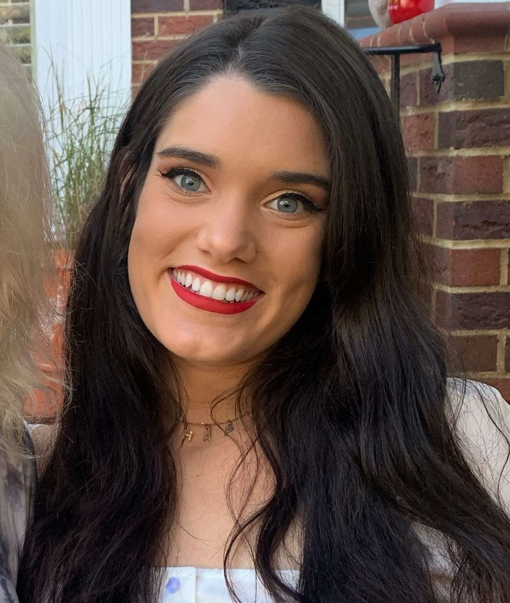

<link href='https://fonts.googleapis.com/css?family=Lato:300,400,700' rel='stylesheet' type='text/css'>

<main>
    <div class="about-container">
        <div class="about-container">
             
        </div><div class="text-section">
        
        
    
            <div class="text-container">
                <div class="about-text"> 
                    I am a curiosity-driven Software Engineer. I am happiest when I am creating, learning, exploring and thinking. I have a BSBA in Management Information Systems, and I am currently pursuing an MS degree in Information Technology with a concentration in Software Systems Design &
                    Engineering from the University of North Carolina at Charlotte. 
                    
                    <br>
                    <br>
                    I am passionate about the importance of diversity in technology. Dedicated to closing the gender gap in tech and redefining what it means to be a programmer, I have spent the last two years volunteering at UNC Charlotte's STEM pre-college helping to promote organizations such as
                    Girls Who Code and teaching IT focused courses to middle schoolers.
                    <br>
                    <br>
                    Apart from technology, I am a chihuahua mom, Boston sports fanatic,  and Disney lover. I also enjoy running and being active. In my free time can find me watching a Patriots game,
                    training for a half marathon, or planning my next vacation to Disney World.
                    <br>
                </div>
            </div>
        </div>
    </div>
</main>